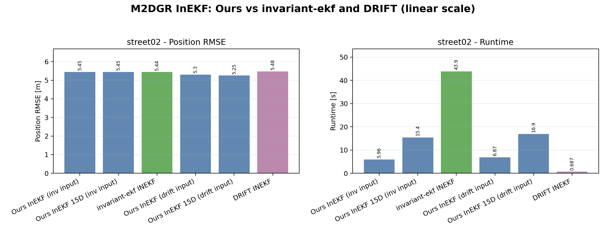

Implementation Scope
9D InEKF
[delta_phi, delta_v, delta_p] tangent error state.
15D InEKF
[delta_phi, delta_v, delta_p, delta_bg, delta_ba] tangent error state.
Lie Group Utilities
SO(3) and SE_2(3) Exp, Log, plus, minus, adjoint, and Jacobian helpers.
Nominal State
X =
[ R v p
0 1 0
0 0 1 ]The covariance is defined on the tangent error vector, while the nominal state is propagated on the matrix Lie group.
Run
python3 benchmarks/invariant_ekf_kaist_vio_benchmark.py --max-steps 500
The script reads config/compare.yaml and writes benchmark
artifacts under outputs/benchmarks/invariant_ekf/.
Results

